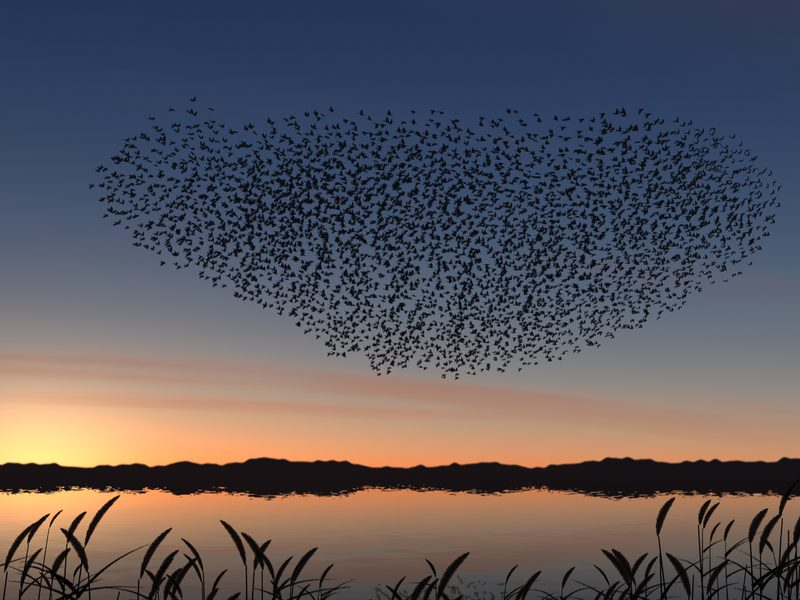

In preparation
Albion Rose
The cistern contains: the fountain overflows.William Blake
An international platform for teaching and learning at the frontiers of knowledge. Built with scientists and thinkers, checked by them, and open to schools.
The idea · why
Learning at the edges
- Every map has an edgeNo map is the territory. Learning happens where the maps meet.
- Learning is translationIt runs both ways: between people, between fields, and now between people and the machines they build.
- Created, and discoveredIf it is all created, that is solipsism. If it is all discovered, that is compliance. We keep both open.
- Learned is not yet livedWhat is learned on a screen has still to be lived: with the hands, in classrooms, outdoors.
What is now proved was once only imagin’d.William Blake
The resources
Made to be handled, and checked
Each piece is a working simulation, not a film of one: mathematics running in code. Each says what it is a model of, where its numbers come from, and where the model stops.
- Builtwith the people whose field it is
- Checkedby specialists, before it opens
- Openedwith its sources and its limits stated
- Revisedwhen someone shows it is wrong
 A Leaf in the SunIt draws its own veins, then lives by the light.
A Leaf in the SunIt draws its own veins, then lives by the light.
 The HiveA hundred and twenty bees, one comb, and a meadow that keeps changing.
The HiveA hundred and twenty bees, one comb, and a meadow that keeps changing.
 The smallest cell, in woolKnitted stitch by stitch until it is ready to divide.
The smallest cell, in woolKnitted stitch by stitch until it is ready to divide.
 Living inkInk in water spreads. What would it take for a drop to hold together?
Living inkInk in water spreads. What would it take for a drop to hold together?
 Threads under the LeavesA fungus looking for wood. Put a piece down, or cut a cord.
Threads under the LeavesA fungus looking for wood. Put a piece down, or cut a cord.

The MurmurationEach starling watches its seven nearest neighbours, and nobody leads.These six are first pieces from the founder’s own workshop, shown as examples of the standard. Each opens live.
Our code
Seeing further, together
Held · 7 minutesA film in clay about who was held, what is handed on, and why a circle of different people sees further than a circle of the same.
People now learn alongside AI systems, and those systems are shaped by what people give them. We take that to be a shared, co-evolutionary process, and nobody’s to solve alone. This is how we mean to conduct ourselves in it.
- No one group holds the whole mapHowever careful its members. So the work is done with others, and in the open.
- Difference is the pointWe do not flatten many ways of knowing into one.
- We keep track of our mapsWe say which model, paradigm or lens we are using, where it ends, and how it has changed over time.
- We keep the space openA learner is not a target to optimise. Possibility stays open.
- The real world holds usIt held us before any model did. Models answer to it, never the reverse.
Three to try
The plan · how
How it will work
- A public museumEvery field has a lab. The labs open on to one museum: catalogued, and free to explore.
- Passages between fieldsWhere two labs meet, each is translated into the terms of the other.
- A place for everyoneOne globe, on which each person is the same size.
Who it is for
Schools
Free resources for classrooms, with fuller sets for member schools. Built by teachers, for pupils to handle and not only to read.
Universities and researchers
A way to show research to a wider public and to those who fund it, and a community for people working where one field meets another.
Everyone else
Open museums of ideas, and a seat in the conversation about where knowledge is going.
Scientists and thinkers from around the world are being invited, a few at a time. Their names will appear here as they join.
The name
Albion is everyone
The most sublime act is to set another before you.William Blake
For William Blake, Albion is not a country. He is all of us: a sleeper who wakes.
In the print called Albion Rose, a figure who has been labouring in the dark has risen. He stands in the light with his arms open. He is not taking anything. He is giving himself away.
That is the gesture this place is named for. Open hands, no flag, and room for everyone who comes.
Who
Founded by Alexander Sabine, with the first few people already on board.
The way it will be built can be seen now at temporalgrammar.ai: films in clay, a walk-through museum, and simulations made to be handled.
If you are a scientist, a teacher or a school and would like to be part of it, write.